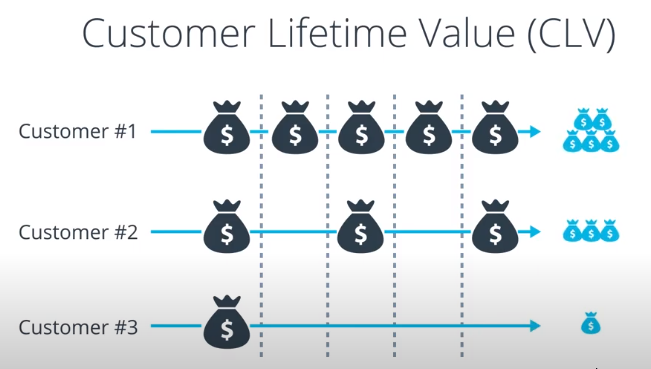
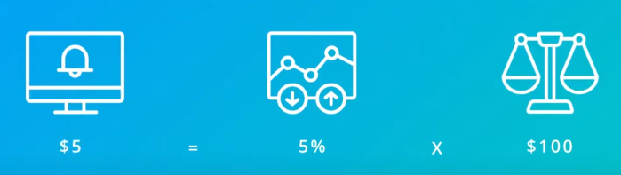

CPC-->Cost Per Click which means you'll bid the price you're willing to pay for one click and this will be a maximum cost per click
-->Google help to pay just enough to beat the competition
-->we consider some other factors in addition to advertiser's bid:
1-Expected clickthrough rate
2-Landing page experience(relevant and original content)

Ad formats-->mean ad extensions


The ad of 4$ has a low quality and no format impact that it doesn't get a position on the page at all

-->You just have to pay on click which make you beat other competition
-->Ad quality impacts price
-->Higher Ad Rank = Better Ad Position
-----------------------------------------------------------


-->to calculate unique value of one visit to your site you measure:
1-Your conversion rate
2-How much each new conversion is worth on average
Conversion rate-->is the percentage of people that after clicking on your ad also perform your intended action like(purchase-Fill out form-newsletter subscription)
-->How much each new conversion is worth on average?
Ans: in many cases, your conversion value is your customer lifetime value, but there is a caveat especially e-commerce companies often find themselves acquiring the same customer many times again and again, Think about your own purchasing behavior, if you're looking for a new piece of clothing for example How often do you start by searching with google instead of directly going to the website you've purchased something from before?
since the advertiser has to pay again if you click on one of their ads event though you're already a customer they incur additional acquisition costs

---------------------------------------------------------------------------




-------------------------------------------------------------------